It is useful to consider what geometrical meaning can be given to the differential coefficient.
In the first place, any function of $x$, such, for example, as $x^2$, or $\sqrt{x}$, or $ax+b$, can be plotted as a curve; and nowadays every schoolboy is familiar with the process of curve-plotting.
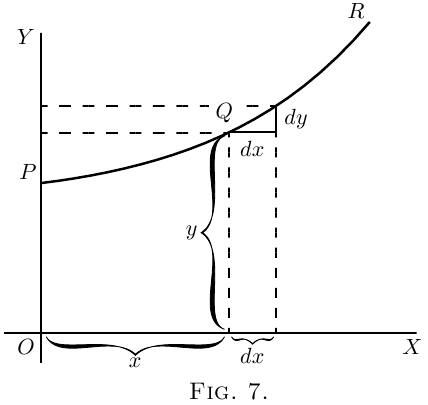
Let $PQR$, in Figure 7, be a portion of a curve plotted
with respect to the axes of coordinates $OX$ and $OY$.
Consider any point $Q$ on this curve, where the
abscissa of the point is $x$ and its ordinate is $y$.
Now observe how $y$ changes when $x$ is varied. If $x$
is made to increase by a small increment $dx$, to the
right, it will be observed that $y$ also (in this particular
curve) increases by a small increment $dy$ (because this
particular curve happens to be an ascending curve).
Then the ratio of $dy$ to $dx$ is a measure of the degree
to which the curve is sloping up between the two
points $Q$ and $T$. As a matter of fact, it can be seen
on the figure that the curve between $Q$ and $T$ has
many different slopes, so that we cannot very well
speak of the slope of the curve between $Q$ and $T$. If,
however, $Q$ and $T$ are so near each other that the
small portion $QT$ of the curve is practically straight,
then it is true to say that the ratio $\dfrac{dy}{dx}$ is the slope of
the curve along $QT$. The straight line $QT$ produced
on either side touches the curve along the portion $QT$
only, and if this portion is indefinitely small, the
straight line will touch the curve at practically
one point only, and be therefore a tangent to the
curve.
This tangent to the curve has evidently the same
slope as $QT$, so that $\dfrac{dy}{dx}$ is the slope of the tangent to
the curve at the point $Q$ for which the value of $\dfrac{dy}{dx}$ is
found.
We have seen that the short expression “the slope
of a curve” has no precise meaning, because a curve
has so many slopes–in fact, every small portion of a
curve has a different slope. “The slope of a curve at
a point” is, however, a perfectly defined thing; it is
the slope of a very small portion of the curve situated
just at that point; and we have seen that this is the
same as “the slope of the tangent to the curve at that
point.”
Observe that $dx$ is a short step to the right, and
$dy$ the corresponding short step upwards. These
steps must be considered as short as possible–in fact
indefinitely short,–though in diagrams we have to
represent them by bits that are not infinitesimally
small, otherwise they could not be seen.
We shall hereafter make considerable use of this
circumstance that $\dfrac{dy}{dx}$ represents the slope of the curve
at any point.
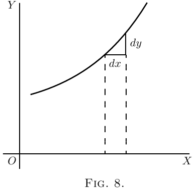
If a curve is sloping up at $45°$ at a particular point,
as in Figure 8, $dy$ and $dx$ will be equal, and the value
of $\dfrac{dy}{dx} = 1$.
If the curve slopes up steeper than $45°$ (Figure 9),
$\dfrac{dy}{dx}$ will be greater than $1$.
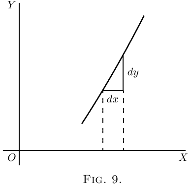
If the curve slopes up very gently, as in Figure 10,
$\dfrac{dy}{dx}$ will be a fraction smaller than $1$.
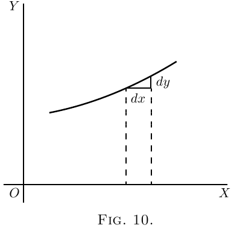
For a horizontal line, or a horizontal place in a
curve, $dy=0$, and therefore $\dfrac{dy}{dx}=0$.
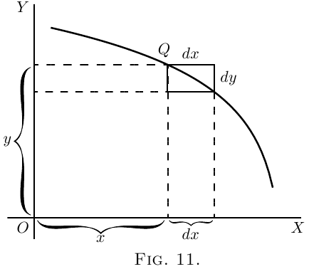
If a curve slopes downward, as in Figure 11, $dy$ will
be a step down, and must therefore be reckoned of
negative value; hence $\dfrac{dy}{dx}$ will have negative sign
also.
If the “curve” happens to be a straight line, like
that in Figure 12, the value of $\dfrac{dy}{dx}$ will be the same at
all points along it. In other words its slope is constant.
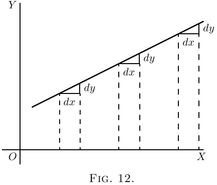
If a curve is one that turns more upwards as it
goes along to the right, the values of $\dfrac{dy}{dx}$ will become
greater and greater with the increasing steepness, as
in Figure 13.
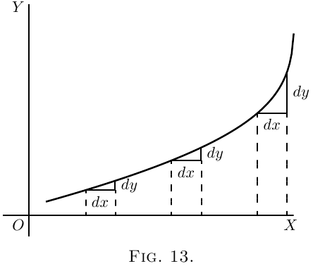
If a curve is one that gets flatter and flatter as it
goes along, the values of $\dfrac{dy}{dx}$ will become smaller and
smaller as the flatter part is reached, as in Figure 14.
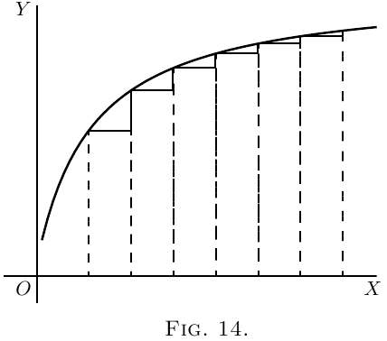
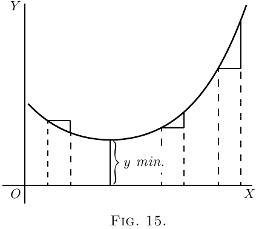
If a curve first descends, and then goes up again,
as in Figure 15, presenting a concavity upwards, then
clearly $\dfrac{dy}{dx}$ will first be negative, with diminishing
values as the curve flattens, then will be zero at the
point where the bottom of the trough of the curve is
reached; and from this point onward $\dfrac{dy}{dx}$ will have
positive values that go on increasing. In such a case
$y$ is said to pass by a minimum. The minimum
value of $y$ is not necessarily the smallest value of $y$,
it is that value of $y$ corresponding to the bottom of
the trough; for instance, in Figure 28 (the
value of $y$ corresponding to the bottom of the trough
is $1$, while $y$ takes elsewhere values which are smaller
than this. The characteristic of a minimum is that
$y$ must increase on either side of it.
Note–For the particular value of $x$ that makes
$y$ a minimum, the value of $\dfrac{dy}{dx} = 0$.
If a curve first ascends and then descends, the
values of $\dfrac{dy}{dx}$ will be positive at first; then zero, as
the summit is reached; then negative, as the curve
slopes downwards, as in Figure 16. In this case $y$ is
said to pass by a maximum, but the maximum
value of $y$ is not necessarily the greatest value of $y$.
In Figure 28, the maximum of $y$ is $2\frac{1}{3}$, but this is by no
means the greatest value $y$ can have at some other
point of the curve.
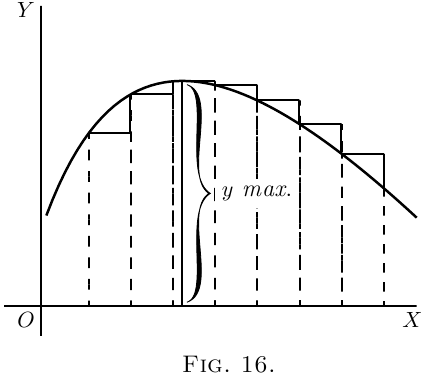
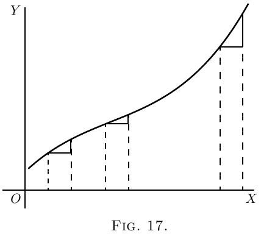
Note–For the particular value of $x$ that makes
$y$ a maximum, the value of $\dfrac{dy}{dx}= 0$.
If a curve has the peculiar form of Figure 17, the
values of $\dfrac{dy}{dx}$ will always be positive; but there will
be one particular place where the slope is least steep,
where the value of $\dfrac{dy}{dx}$ will be a minimum; that is,
less than it is at any other part of the curve.
If a curve has the form of Figure 18, the value of $\dfrac{dy}{dx}$
will be negative in the upper part, and positive in the
lower part; while at the nose of the curve where it
becomes actually perpendicular, the value of $\dfrac{dy}{dx}$ will
be infinitely great.
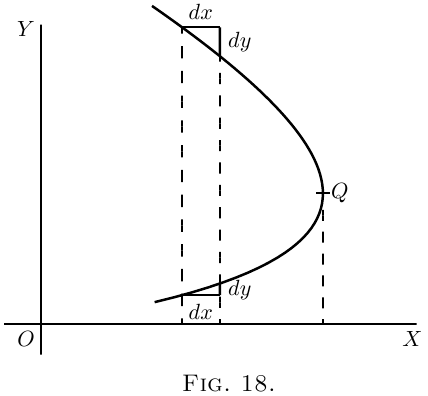
Now that we understand that $\dfrac{dy}{dx}$ measures the
steepness of a curve at any point, let us turn to some
of the equations which we have already learned how
to differentiate.
(1) As the simplest case take this:
\[
y=x+b.
\]
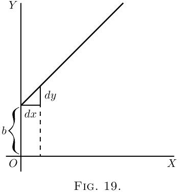
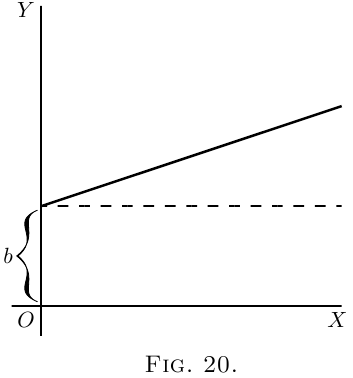
It is plotted out in Figure 19, using equal scales
for $x$ and $y$. If we put $x = 0$, then the corresponding
ordinate will be $y = b$; that is to say, the “curve”
crosses the $y$-axis at the height $b$. From here it
ascends at $45°$; for whatever values we give to $x$ to
the right, we have an equal $y$ to ascend. The line
has a gradient of $1$ in $1$.
Now differentiate $y = x+b$, by the rules we have
already learned (here and here), and we get $\dfrac{dy}{dx} = 1$.
The slope of the line is such that for every little
step $dx$ to the right, we go an equal little step $dy$
upward. And this slope is constant–always the
same slope.
(2) Take another case:
\[
y = ax+b.
\]
We know that this curve, like the preceding one, will
start from a height $b$ on the $y$-axis. But before we
draw the curve, let us find its slope by differentiating;
which gives $\dfrac{dy}{dx} = a$. The slope will be constant, at
an angle, the tangent of which is here called $a$. Let
us assign to $a$ some numerical value–say $\frac{1}{3}$. Then we
must give it such a slope that it ascends $1$ in $3$; or
$dx$ will be $3$ times as great as $dy$; as magnified in
Figure 21. So, draw the line in Figure 20 at this slope.
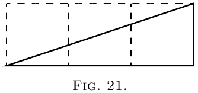
(3) Now for a slightly harder case.
\begin{align*}
Let
y= ax^2 + b.
\end{align*}
Again the curve will start on the $y$-axis at a height $b$
above the origin.
Now differentiate. [If you have forgotten, turn
back to here; or, rather, don't turn back, but think
out the differentiation.]
\[
\frac{dy}{dx} = 2ax.
\]
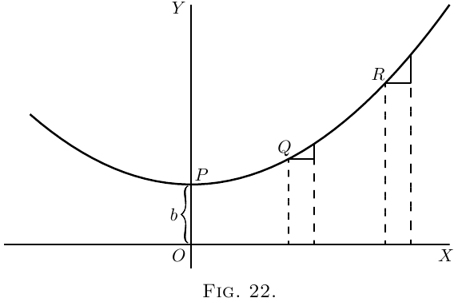
This shows that the steepness will not be constant:
it increases as $x$ increases. At the starting point $P$,
where $x = 0$, the curve (Figure 22) has no steepness–that
is, it is level. On the left of the origin, where
$x$ has negative values, $\dfrac{dy}{dx}$ will also have negative
values, or will descend from left to right, as in the
Figure.
Let us illustrate this by working out a particular
instance. Taking the equation
\[
y = \tfrac{1}{4}x^2 + 3,
\]
and differentiating it, we get
\[
\dfrac{dy}{dx} = \tfrac{1}{2}x.
\]
Now assign a few successive values, say from $0$ to $5$,
to $x$; and calculate the corresponding values of $y$
by the first equation; and of $\dfrac{dy}{dx}$ from the second
equation. Tabulating results, we have:
| $x$ | $0$ | $1$ | $2$ | $3$ | $4$ | $5$ |
| $y$ | $3$ | $3\frac{1}{4}$ | $4$ | $5\frac{1}{4}$ | $7$ | $9\frac{1}{4}$ |
| $d$ | $0$ | $\frac{1}{2}$ | $1$ | $1\frac{1}{2}$ | $2$ | $2\frac{1}{2}$ |

If a curve comes to a sudden cusp, as in Figure 25,
the slope at that point suddenly changes from a slope
upward to a slope downward. In that case $\dfrac{dy}{dx}$ will
clearly undergo an abrupt change from a positive to
a negative value.
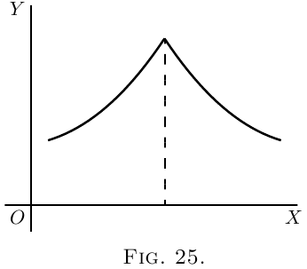
The following examples show further applications
of the principles just explained.
(4) Find the slope of the tangent to the curve
\[
y = \frac{1}{2x} + 3,
\]
at the point where $x = -1$. Find the angle which this
tangent makes with the curve $y = 2x^2 + 2$.
The slope of the tangent is the slope of the curve at
the point where they touch one another (see here);
that is, it is the $\dfrac{dy}{dx}$ of the curve for that point. Here
$\dfrac{dy}{dx} = -\dfrac{1}{2x^2}$ and for $x = -1$, $\dfrac{dy}{dx} = -\dfrac{1}{2}$, which is the
slope of the tangent and of the curve at that point.
The tangent, being a straight line, has for equation
$y = ax + b$, and its slope is $\dfrac{dy}{dx} = a$, hence $a = -\dfrac{1}{2}$. Also
if $x= -1$, $y = \dfrac{1}{2(-1)} + 3 = 2\frac{1}{2}$; and as the tangent
passes by this point, the coordinates of the point must
satisfy the equation of the tangent, namely
\[
y = -\dfrac{1}{2} x + b,
\]
so that $2\frac{1}{2} = -\dfrac{1}{2} × (-1) + b$ and $b = 2$; the equation of
the tangent is therefore $y = -\dfrac{1}{2} x + 2$.
Now, when two curves meet, the intersection being
a point common to both curves, its coordinates must
satisfy the equation of each one of the two curves;
that is, it must be a solution of the system of simultaneous
equations formed by coupling together the
equations of the curves. Here the curves meet one
another at points given by the solution of
\begin{aligned}
y &= 2x^2 + 2, \\
y &= -\tfrac{1}{2} x + 2 \quad\text{or}\quad 2x^2 + 2 = -\tfrac{1}{2} x + 2;
\end{aligned}
that is,
\[
x(2x + \tfrac{1}{2}) = 0.
\]
This equation has for its solutions $x = 0$ and $x = -\tfrac{1}{4}$.
The slope of the curve $y = 2x^2 + 2$ at any point is
\[
\dfrac{dy}{dx} = 4x.
\]
For the point where $x = 0$, this slope is zero; the curve
is horizontal. For the point where
\[
x = -\dfrac{1}{4},\quad \dfrac{dy}{dx} = -1;
\]
hence the curve at that point slopes downwards to
the right at such an angle $\theta$ with the horizontal that
$\tan \theta = 1$; that is, at $45°$ to the horizontal.
The slope of the straight line is $-\tfrac{1}{2}$; that is, it slopes
downwards to the right and makes with the horizontal
an angle $\phi$ such that $\tan \phi = \tfrac{1}{2}$; that is, an angle of
$26° 34'$. It follows that at the first point the curve
cuts the straight line at an angle of $26° 34'$, while at
the second it cuts it at an angle of $45° - 26° 34' = 18° 26'$.
(5) A straight line is to be drawn, through a point
whose coordinates are $x = 2$, $y = -1$, as tangent to the
curve $y = x^2 - 5x + 6$. Find the coordinates of the
point of contact.
The slope of the tangent must be the same as the
$\dfrac{dy}{dx}$ of the curve; that is, $2x - 5$.
The equation of the straight line is $y = ax + b$, and
as it is satisfied for the values $x = 2$, $y = -1$, then
$-1 = a×2 + b$; also, its $\dfrac{dy}{dx} = a = 2x - 5$.
The $x$ and the $y$ of the point of contact must also
satisfy both the equation of the tangent and the
equation of the curve.
We have then
\begin{aligned}
y &= x^2 - 5x + 6, \,\,\,\,\,(i) \\
\end{aligned}
\begin{aligned}
y &= ax + b, \,\,\,\,\,(ii) \\
\end{aligned}
\begin{aligned}
-1 &= 2a + b, \,\,\,\,\,(iii) \\
\end{aligned}
\begin{aligned}
a &= 2x - 5, \,\,\,\,\,(iv)
\end{aligned}
four equations in $a$, $b$, $x$, $y$.
Equations (i) and (ii) give $x^2 - 5x + 6 = ax+b$.
Replacing $a$ and $b$ by their value in this, we get
\[
x^2 - 5x + 6 = (2x - 5)x - 1 - 2(2x - 5),
\]
which simplifies to $x^2 - 4x + 3 = 0$, the solutions of
which are: $x = 3$ and $x = 1$. Replacing in (i), we get
$y = 0$ and $y = 2$ respectively; the two points of contact
are then $x = 1$, $y = 2$, and $x = 3$, $y = 0$.
Note.–In all exercises dealing with curves, students
will find it extremely instructive to verify the deductions
obtained by actually plotting the curves.
(1) Plot the curve $y = \tfrac{3}{4} x^2 - 5$, using a scale of
millimetres. Measure at points corresponding to
different values of $x$, the angle of its slope.
Find, by differentiating the equation, the expression
for slope; and see, from a Table of Natural Tangents,
whether this agrees with the measured angle.
(2) Find what will be the slope of the curve
\[
y = 0.12x^3 - 2,
\]
at the particular point that has as abscissa $x = 2$.
(3) If $y = (x - a)(x - b)$, show that at the particular
point of the curve where $\dfrac{dy}{dx} = 0$, $x$ will have the value
$\tfrac{1}{2} (a + b)$.
(4) Find the $\dfrac{dy}{dx}$ of the equation $y = x^3 + 3x$; and
calculate the numerical values of $\dfrac{dy}{dx}$ for the points
corresponding to $x = 0$, $x = \tfrac{1}{2}$, $x = 1$, $x = 2$.
(5) In the curve to which the equation is $x^2 + y^2 = 4$,
find the values of $x$ at those points where the slope ${} = 1$.
(6) Find the slope, at any point, of the curve whose
equation is $\dfrac{x^2 }{3^2} + \dfrac{y^2}{2^2} = 1$; and give the numerical value
of the slope at the place where $x = 0$, and at that
where $x = 1$.
(7) The equation of a tangent to the curve
$y = 5 - 2x + 0.5x^3$, being of the form $y = mx + n$, where
$m$ and $n$ are constants, find the value of $m$ and $n$ if
the point where the tangent touches the curve has
$x=2$ for abscissa.
(8) At what angle do the two curves
\[
y = 3.5x^2 + 2 \quad \text{and} \quad y = x^2 - 5x + 9.5
\]
cut one another?
(9) Tangents to the curve $y = ± \sqrt{25-x^2}$ are drawn
at points for which $x = 3$ and $x = 4$. Find the coordinates
of the point of intersection of the tangents
and their mutual inclination.
(10) A straight line $y = 2x - b$ touches a curve
$y = 3x^2 + 2$ at one point. What are the coordinates
of the point of contact, and what is the value of $b$?
(2) $1.44$.
(4) $\dfrac{dy}{dx} = 3x^2 + 3$; and the numerical values are:
$3$, $3 \frac{3}{4}$, $6$, and $15$.
(5) $ ± \sqrt{2}$.
(6) $ \dfrac{dy}{dx} = - \dfrac{4}{9} \dfrac{x}{y}$. Slope is zero where $x = 0$; and is $\mp \dfrac{1}{3 \sqrt{2}}$ where $x = 1$.
(7) $m = 4$, $n = -3$.
(8) Intersections at $x = 1$, $x = -3$. Angles $153°\;26'$, $2°\;28'$.
(9) Intersection at $x = 3.57$, $y = 3.50$. Angle $16°\;16'$.
(10) $x = \frac{1}{3}$, $y = 2 \frac{1}{3}$, $b = -\frac{5}{3}$.
Exercises VIII
Answers
Next →
Main Page ↑